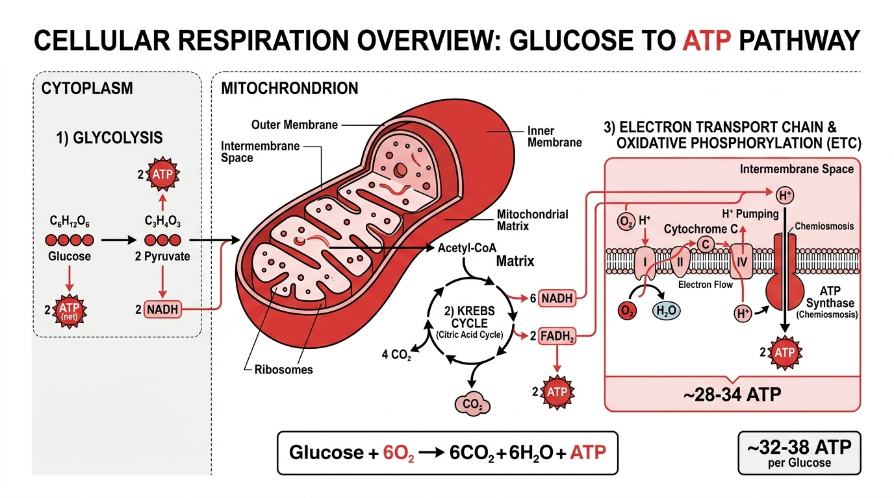
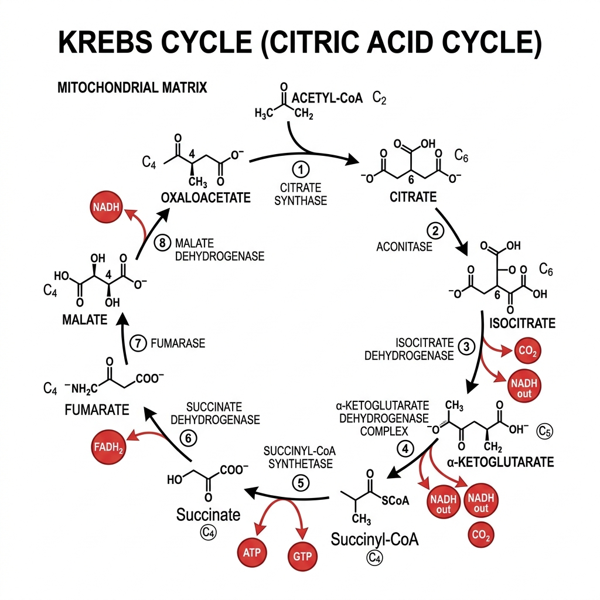
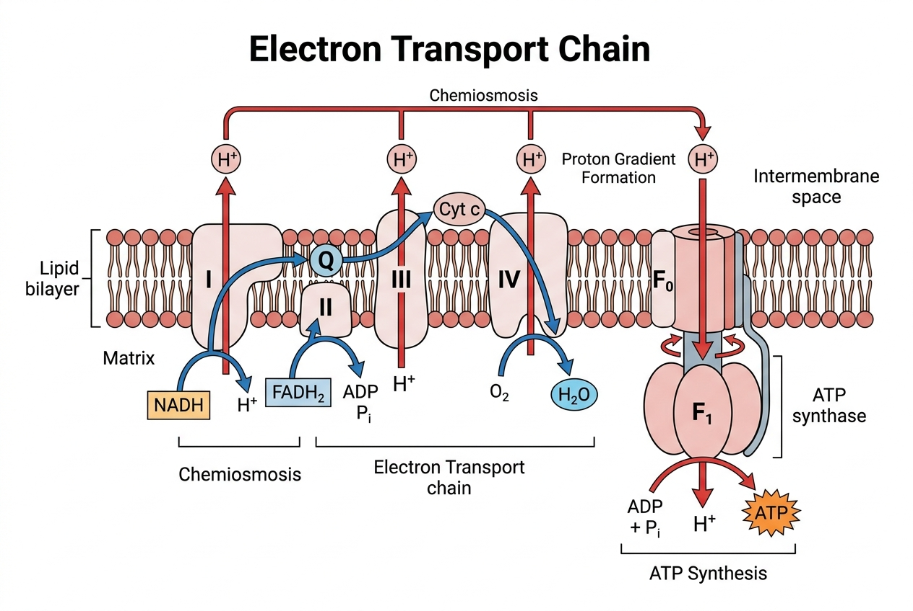

The Forty-Kilogram Paradox
Every day, without you noticing, your body accomplishes an industrial feat of staggering proportions. If you are an average adult, you will synthesize and immediately consume roughly your own body weight in a single chemical—adenosine triphosphate, or ATP. The sheer scale of this microscopic manufacturing process defies our ordinary intuition about how biological systems operate.
Think about that for a moment. Forty to seventy kilograms of this molecule are created within your tissues every twenty-four hours. If you go for a run, that number spikes dramatically as your muscle fibers demand immense energy to slide past one another. If you sit quietly on the couch, reading a book or staring out a window, the production hums along at a steady, unrelenting baseline. Yet at any given fraction of a second, your body contains only about 50 grams of ATP in total.
The implication of this math is dizzying. Every single ATP molecule in your body is broken down and recycled between 500 and 700 times per day. It is a molecular turbine spinning at incomprehensible speed, a frantic, ceaseless recycling program upon which every thought, every heartbeat, every breath, and every blink depends. It is the energetic currency that pays for the privilege of being alive. Stop this recycling—say, by introducing a drop of cyanide, which jams the machinery—and the whole magnificent architecture of your biology collapses in mere minutes. Without ATP, the heart muscle cannot contract, the brain cannot maintain its electrical gradients, and the intricate order of the cell succumbs to the chaos of entropy.
Every single ATP molecule in your body is broken down and recycled between 500 and 700 times per day. It is a frantic, ceaseless recycling program upon which every thought and heartbeat depends.
How does life manage this? The answer lies in a microscopic engine hidden deep within your cells, a metabolic roundabout that takes the shattered remnants of your breakfast and spins them into the energy currency of life. We call it the Krebs cycle, the citric acid cycle, or the tricarboxylic acid (TCA) cycle. But to truly understand it, we must see it not as a static diagram in a biology textbook, complete with confusing arrows and unpronounceable chemical names, but as a roaring, dynamic cascade—a controlled internal fire that has been burning steadily since the dawn of complex life.
The Ancient Fire
In the late 1770s, the brilliant French chemist Antoine Lavoisier performed an experiment that would forever change our understanding of biology. With an elegant blend of chemistry and physics, he placed a guinea pig in an ice calorimeter—a specialized chamber surrounded by a known quantity of ice. As the animal breathed, moved, and lived within the chamber, its body heat melted the ice. Lavoisier carefully measured the amount of water produced, alongside the carbon dioxide the animal exhaled.
When he compared this biological heat generation to the burning of carbon in the same apparatus, the ratios matched flawlessly. Lavoisier concluded, with profound insight: La respiration est donc une combustion. Respiration is, therefore, a combustion. It was a revolutionary idea that bridged the gap between the inanimate physics of fire and the animate warmth of living creatures.
He was right, but only in the broadest thermodynamic sense. When we eat glucose (a simple sugar), our bodies react it with oxygen to produce carbon dioxide and water, releasing energy in the process. This is the exact same chemical equation as throwing a marshmallow into a campfire:
C₆H₁₂O₆ + 6O₂ → 6CO₂ + 6H₂O + Energy
But here is where the "burning glucose" metaphor becomes dangerously misleading. Combustion, as we observe it in a fireplace, is chaotic. A fire releases energy all at once as uncontrolled heat and light, leaving behind only ash. If our cells simply burned glucose in this manner, the sudden release of thermal energy would cause us to spontaneously break down, literally cooking our tissues from the inside out. The genius of cellular respiration is that it takes the explosive potential of glucose and dismantles it in a slow, exquisitely controlled series of steps, capturing the released energy in small, manageable packets—much like catching the energy of a raging waterfall by diverting it through a series of carefully calibrated waterwheels.
If our cells simply burned glucose, we would spontaneously break down. The genius of cellular respiration is catching the explosive potential of sugar in small, manageable packets.
Furthermore, the neat equation implies that oxygen directly interacts with the sugar, much as oxygen feeds a flame. It doesn't. As we journey through the microscopic engines of our cells, we will see that oxygen never touches the carbon atoms of our food. The carbon dioxide we exhale is released long before oxygen ever enters the picture. Oxygen waits patiently at the very end of the line, the final catcher in a microscopic game of hot potato, receiving exhausted electrons after their energy has been thoroughly harvested.
Breaking the Sugar
The journey begins in the cytoplasm, the dense, jelly-like substance filling the cell. Here, a glucose molecule—a highly stable, energy-rich ring of six carbon atoms—arrives via the bloodstream, delivered to the cellular doorstep by the circulatory system. Before we can extract its deep reserves of energy, we have to crack it open. This is no easy feat, as glucose is remarkably inert on its own.
This initial cracking process is called glycolysis (literally translating to "sugar splitting"). It is an ancient, universal metabolic pathway, shared by virtually all life on Earth, from the bacteria dwelling in deep-sea vents to the blue whale navigating the oceans. Glycolysis does not require oxygen; it is a primal inheritance from an era long before oxygen filled our atmosphere, a testament to the evolutionary ingenuity of our earliest ancestors.
Glycolysis is a ten-step process, and it perfectly illustrates a strict metabolic economy: the cell must spend energy to make energy. The glucose molecule is incredibly stable. Left to its own devices on a shelf, a jar of glucose will not spontaneously release its energy or break apart for centuries. To extract energy from it, the cell must first push it over a significant activation energy barrier. It must force the stable molecule into a state of precarious instability.
The cell begins its "investment phase" by sacrificing two molecules of its precious, hard-earned ATP. The enzyme hexokinase kicks off the process by forcefully ripping a phosphate group off an ATP molecule and slapping it onto the sixth carbon of the glucose ring. This achieves two crucial goals: it immediately traps the glucose inside the cell, as the charged phosphate prevents it from crossing the cell membrane, and it begins to warp its once-stable structure.
After a subtle structural rearrangement, another key enzyme, phosphofructokinase (PFK), burns a second ATP to attach a second phosphate group to the opposite side of the sugar. PFK acts as the main valve or throttle of glycolysis; it decides the pace at which sugar is burned based on the cell's current energy needs. The resulting molecule, fructose-1,6-bisphosphate, is incredibly tense, unbalanced, and highly reactive. It is a molecule desperate to snap.
And break it does, splitting cleanly down the middle into two symmetrical three-carbon halves.
Now comes the "payoff phase." These two three-carbon halves undergo further chemical rearrangements, dancing through a gauntlet of enzymes. Along the way, the cell manages to harvest four molecules of ATP through the precise action of enzymes like phosphoglycerate kinase and finally pyruvate kinase, which performs the last energy-yielding step. Because the cell initially invested two ATPs and gained four in return, the net profit stands at exactly two ATPs per glucose molecule.
But ATP isn't the only prize. During these intricate rearrangements, the cell strips a few high-energy electrons away from the sugar fragments. To carry these precious, volatile electrons safely through the cellular environment, the cell uses a specialized molecular shuttle called NAD⁺. When NAD⁺ accepts two electrons and a proton, it is reduced, becoming NADH. Glycolysis yields two of these loaded NADH shuttles.
At the end of this ten-step cytosolic dance, our single six-carbon glucose has been split into two molecules of a three-carbon compound called pyruvate. We have achieved a modest profit of 2 ATP and 2 NADH. The sugar has been primed, but the true energetic potential remains largely untapped.
When Oxygen Fails
For our energy-hungry tissues, the small yield of glycolysis is merely the appetizer. The real feast awaits inside the mitochondria. But what happens if oxygen is absent? What happens if the end of the line—the Electron Transport Chain—backs up because there is no oxygen to catch the falling electrons?
This is where the ancient emergency backup system known as fermentation kicks in. If the mitochondria shut down, the NADH shuttles created during glycolysis have nowhere to drop off their electrons. Soon, the entire cytosolic pool of empty NAD⁺ is depleted. Without empty NAD⁺ to accept newly stripped electrons, glycolysis itself will grind to a halt. An oxygen-dependent cell, like a neuron, will quickly run out of ATP and suffer irreversible damage.
To save itself, the cell must empty its NADH shuttles by dumping the electrons onto whatever molecular garbage it can find. In human muscle cells during a frantic sprint, oxygen delivery simply cannot keep pace with the massive energy demand. The muscle cell desperately dumps the electrons from NADH directly onto the pyruvate molecule itself. This chemical reduction converts pyruvate into lactic acid (lactate). This buildup is often associated with the familiar "burn" and fatigue in your muscles during intense exertion. By creating lactic acid, the cell regenerates empty NAD⁺, allowing glycolysis to continue churning out a meager, yet life-saving, 2 ATP per glucose.
Yeast cells employ a different, clever trick. When oxygen fails in their environment, they chop a carbon dioxide off the pyruvate and then dump the electrons from NADH onto the resulting two-carbon molecule, producing ethanol (drinking alcohol). This ancient microbial strategy is the foundation of baking and brewing—the trapped CO₂ raises the dough to make bread, and the ethanol ferments to produce beer and wine.
Fermentation is incredibly inefficient. It yields only 2 ATP per glucose, a fraction of the 30-32 ATP yielded by full aerobic respiration. But for a sprinting cheetah trying to catch its prey, or a yeast cell locked deep within a sealed wine barrel, those 2 ATP mean the absolute difference between survival and death.
The Bridge
When oxygen is plentiful, our two pyruvate molecules are spared the dead-end fate of fermentation. Instead, they journey inward, crossing the double membranes of the mitochondrion to enter the deep interior known as the matrix. Here, they encounter a massive, intricate protein machine known as the pyruvate dehydrogenase complex. This complex is a marvel of molecular engineering, larger even than a ribosome, and it acts as the gateway to the main metabolic event.
This complex performs a critical "bridge" reaction that links the end of glycolysis to the start of the Krebs cycle. It violently chops one carbon atom off the three-carbon pyruvate, releasing it as a molecule of carbon dioxide. Since one glucose molecule provided two pyruvates, this bridge reaction occurs twice, releasing two molecules of CO₂. Remarkably, this represents one full third of all the carbon dioxide you exhale from the complete breakdown of that original sugar molecule. It is the very first CO₂ released in the entire respiratory process.
In the process of chopping off this carbon, the molecule is oxidized, and more electrons are harvested. These high-energy electrons are loaded onto an NAD⁺ shuttle, generating another NADH. Again, because there are two pyruvates, the bridge reaction produces two more NADH molecules for the cell’s growing energy bank.
The remaining two-carbon fragment, now called an acetyl group, is then attached to a critical helper molecule called Coenzyme A. Discovered in 1945 by Fritz Lipmann, this coenzyme acts as a molecular tether. The resulting molecule, Acetyl-CoA, is incredibly unstable and energetic, primed for the next stage.
Acetyl-CoA is the great metabolic unifier—the VIP pass that grants entry into the Krebs cycle.
Acetyl-CoA is perhaps the most important metabolic junction in biology. It is the VIP pass that grants entry into the Krebs cycle. But it isn't just sugar that turns into Acetyl-CoA; the fats from a slice of avocado and the proteins from an egg are also ultimately broken down into this universal two-carbon currency. It is the great metabolic unifier, channeling all sources of fuel toward the same microscopic furnace.
Before we cross that threshold, let us pause and take a strict accounting of our energetic wealth. The cell is about to send its electrons to the final processing plant, but how many shuttles has it loaded? From the initial splitting of glucose in glycolysis, we gained 2 NADH. The bridge reaction just provided 2 more NADH. As we enter the Krebs cycle, which will run twice per glucose molecule, it will yield an immense final haul of 6 NADH and 2 FADH₂. This grand total—10 NADH and 2 FADH₂ shuttles per glucose—represents the true treasure extracted from our food. This precise inventory is crucial, for it is these very shuttles that will shortly power the massive turbines of the electron cascade.

The Cycle
In the 1930s, biochemists were struggling to map out how exactly cells extracted the remaining energy from their food. They knew various organic acids—such as citrate, succinate, and malate—were somehow involved, because adding them to minced tissue dramatically increased oxygen consumption. The brilliant Hungarian biochemist Albert Szent-Györgyi noticed something deeply odd: adding just a tiny sprinkle of these acids stimulated a massive amount of respiration, far more than could be accounted for by the consumption of the acid itself. They seemed to act as catalysts, repeatedly driving a hidden reaction forward.
Enter Hans Adolf Krebs, a meticulous and brilliant Jewish-German biochemist. In 1933, as the shadow of the Nazi regime fell over Germany, Krebs was summarily dismissed from his post at the University of Freiburg. Packing only his most essential laboratory equipment, he fled to England, eventually settling and establishing his research at the University of Sheffield.
It was there, in 1937, that Krebs made a breathtaking conceptual leap. Staring at the data, he realized the metabolic pathway wasn't a straight, linear sequence of reactions; it was a closed loop. The final product of the pathway reacted with the incoming food molecule to start the whole thing over again. It was an engine that turned continuously, consuming fuel and spinning out energy, regenerating its own components with each revolution.
Excited by his monumental discovery, Krebs wrote up the results and submitted his paper to Nature, the world's most prestigious scientific journal. They rejected it. The editor returned the paper with a polite, dismissive note stating they already had "sufficient letters for seven or eight weeks" and could not find space for his manuscript. Undeterred, Krebs published his findings instead in the journal Enzymologia. More than a decade later, the sheer magnitude of the discovery was recognized when Krebs was awarded the 1953 Nobel Prize in Physiology or Medicine. Nature would later formally acknowledge the rejection as one of their most famous historical missteps, a humbling reminder that paradigm-shifting science is often unrecognizable at first glance.
The cycle Krebs mapped out is an elegant, eight-step chemical roundabout located deep within the fluid-filled mitochondrial matrix. Rather than a rigid list of discrete steps, it is best understood as a fluid narrative of molecular transformation—a continuous process of condensation, harvesting, and regeneration.
The sequence begins with a decisive merger. The two-carbon Acetyl-CoA, holding the last remnants of our glucose molecule, enters the cycle and is immediately fused with a waiting four-carbon molecule called oxaloacetate. This union, catalyzed by an enzyme named citrate synthase, produces a larger, six-carbon molecule known as citrate, giving the pathway its alternate name, the citric acid cycle. Having delivered its two-carbon payload, the Coenzyme A carrier detaches and floats away, free to fetch another acetyl group from the bridge. This newly formed citrate is stable—perhaps too stable for the cell's energetic purposes. To prepare it for the upcoming extraction, the cycle performs a subtle rearrangement. An enzyme subtly shifts a hydroxyl group from one carbon atom to an adjacent one, converting citrate into a highly reactive isomer called isocitrate. The molecule is now primed and vulnerable.
What follows are two profound moments of chemical harvesting. In rapid succession, massive enzyme complexes attack the isocitrate, stripping away its high-energy electrons and loading them onto waiting NAD⁺ shuttles to form NADH. During these violent extractions, the molecule is fractured, and carbon atoms are cleaved off. First, a single carbon is severed, floating away as carbon dioxide, leaving a five-carbon intermediate behind. Immediately after, the process repeats: more electrons are harvested into NADH, and a second carbon is hacked off as CO₂. When you exhale onto a cold windowpane and see the fog of condensation, it is profound to realize that the carbon dioxide in that breath was forged exactly here, deep within the mitochondrial matrix. Specifically, these two exhaled carbon atoms are the very same two carbons that entered the cycle attached to Acetyl-CoA. The fuel has been completely oxidized, its carbon skeleton entirely dismantled.
With the carbons gone, the cycle shifts its focus to a direct energy payoff and a unique enzymatic maneuver. The remaining four-carbon structure finds itself temporarily attached to another CoA carrier, held by a highly energetic, strained bond. An enzyme shatters this bond, and the explosive release of energy is used directly to forge a molecule of GTP or ATP—the only direct energy currency produced by the cycle itself. The remaining four-carbon molecule, succinate, must now be recycled back into the starting material. To do this, another pair of electrons is stripped away. However, these electrons possess slightly lower energy than those harvested earlier, so they are loaded onto a different type of shuttle, FAD, forming FADH₂.
There is something extraordinary about this specific extraction. The enzyme responsible, succinate dehydrogenase, is utterly unique among the Krebs cycle machinery. While the other enzymes float freely in the matrix soup, this one is physically bolted firmly into the inner mitochondrial membrane. It is, in fact, Complex II of the Electron Transport Chain. It serves as a literal, physical anchor, directly linking the metabolic roundabout of the Krebs cycle to the electron cascade that follows.
Finally, the cycle enters its closing regeneration phase. A water molecule is added to rearrange the chemical bonds, and one last, decisive pair of electrons is stripped away, creating the final NADH of the turn. This ultimate oxidation transforms the molecule back into oxaloacetate, the four-carbon acceptor we started with. The roundabout is complete. The oxaloacetate sits ready and waiting to bind to a fresh Acetyl-CoA, ready to spin the wheel again, endlessly, for as long as you live.
If you are keeping score, you might notice something surprising. One turn of the Krebs cycle directly produces only one solitary molecule of ATP (or GTP). For a cycle famous for producing the energy of life, this seems wildly inefficient, almost pointless. But that is the grand illusion. The Krebs cycle is not an ATP factory; it is an unparalleled electron harvester. Per turn, it yields 3 NADH and 1 FADH₂. Because our single glucose molecule provided two pyruvates, the cycle spins twice for every sugar, yielding a massive haul of 6 NADH and 2 FADH₂.
These electron-loaded shuttles are the true, hidden wealth of the cycle. They hold the "ancient fire" of the sugar molecule, safely captured and contained. Now, the cell just needs to cash them in.

The Electron Cascade
Embedded within the crinkled inner membrane of the mitochondrion sits a series of massive protein complexes. This is the Electron Transport Chain (ETC), the ultimate destination for the ten NADH and two FADH₂ shuttles carefully loaded during glycolysis, the bridge reaction, and the Krebs cycle.

Imagine a sophisticated bucket brigade positioned on a steep, microscopic staircase. The NADH shuttles arrive at the top of the stairs, specifically at Complex I, and dump their high-energy electrons into the massive protein structure. The FADH₂ shuttles, which carry slightly lower-energy electrons, arrive one step down at Complex II—which, as we know, is the very same enzyme succinate dehydrogenase bolted into the membrane from the Krebs cycle—and dump theirs. These electrons are highly prized, volatile, and they are passed rapidly down the chain from one protein complex to the next, jumping across the energetic gap between specialized electron-catchers like ubiquinone and cytochrome c. Each time an electron is passed to a lower energy state, falling inexorably down the thermodynamic gradient, a small, controlled burst of energy is released.
The complexes of the ETC act like microscopic water pumps driven by this falling electricity. They use the energy released by the descending electrons to pump protons (hydrogen ions, H⁺) from the relatively spacious mitochondrial matrix, across the impenetrable inner membrane, and into the confined intermembrane space.
By the time the electrons reach the bottom of the staircase at Complex IV, they have lost most of their energy. Their potential has been fully extracted. But they still need somewhere to go; they cannot be left to clog up the machinery, or the entire flow of electrons would back up and halt the engine.
This is exactly where you take a breath.
The oxygen gas you inhaled travels through your lungs, diffuses into your blood, rides the hemoglobin, and eventually diffuses deep into your mitochondria. Oxygen is highly electronegative—it fiercely desires electrons. It sits patiently at the bottom of the ETC, acting as the final, ultimate electron acceptor. It catches the exhausted electrons off the end of Complex IV, grabs a few free-floating protons from the surrounding fluid, and forms a completely harmless, perfectly stable byproduct: water (H₂O).
This process is the fundamental reason we breathe. If oxygen isn't there to catch the electrons, the whole bucket brigade backs up instantly. Complex IV stops, then III, then I. The Krebs cycle grinds to a halt because it runs out of empty NAD⁺ and FAD shuttles. The cell suffocates at a biochemical level.
The Turbine and the Ox-Phos Wars
As the ETC pumps protons across the membrane, it creates a massive imbalance. The narrow intermembrane space becomes densely packed with positively charged protons, while the matrix is depleted. This creates both a steep chemical gradient (a high concentration outside, a low concentration inside) and a potent electrical gradient (positive outside, negative inside). This combined "proton-motive force" is essentially a biological battery, storing the energy originally contained in the glucose molecule in the form of a pressurized reservoir of protons. But how does the cell use this battery to actually manufacture ATP?
For decades, this question sparked one of the most bitter conflicts in biology, an era colloquially known as the "Ox-Phos Wars." For nearly twenty years, the greatest minds in biochemistry battled ferociously over how exactly oxidation (the burning of food and transfer of electrons) was coupled to phosphorylation (the making of ATP). The reigning paradigm, championed by heavyweights like E.C. Slater, was known as "chemical coupling." Slater and his allies proposed that there must be an invisible, high-energy chemical intermediate—a mysterious "Compound X"—that directly transferred energy to ATP, much like the direct substrate-level phosphorylation seen in glycolysis. The problem was that despite millions of dollars in grants and decades of tireless research, nobody could find Compound X.
Then, in 1961, an eccentric, independently wealthy British biochemist named Peter Mitchell proposed a radical alternative: the chemiosmotic hypothesis. Mitchell argued there was no secret chemical intermediate. The energy was simply the proton gradient itself. The protons, desperate to flow back into the matrix and equalize the pressure, must be channeled through a specific protein pore that somehow uses the physical, mechanical flow of protons to forge ATP.
The biochemical establishment ridiculed him mercilessly. The idea seemed far too physical, too mechanical for the messy, fluid soup of biology. They dismissed him as a crackpot theorist who didn't understand classical biochemistry.
Mitchell's personality didn't help. He was stubborn, difficult, and uncompromisingly brilliant. Frustrated by the academic politics and the steadfast refusal of his peers to take his thermodynamic models seriously, Mitchell resigned from the University of Edinburgh in 1963. He retreated to Glynn House, a decaying, drafty manor house in Cornwall. There, using his own fortune, he established the private Glynn Research Institute, building a state-of-the-art laboratory in the manor's outbuildings to prove them all wrong.
Working closely with his colleague Jennifer Moyle, Mitchell spent years carefully measuring minute pH changes across mitochondrial membranes. Slowly, the evidence mounted. The moment of true, undeniable vindication came when other researchers—notably Ephraim Racker and Walther Stoeckenius—performed a brilliantly simple experiment. They took the protein pore Mitchell had proposed, embedded it in an artificial lipid bubble along with a light-activated proton pump derived from purple bacteria, and showed that simply shining a light to pump protons caused the bubble to rapidly manufacture ATP in the dark. No glucose, no Krebs cycle, no Compound X. Just a proton gradient and a pore.
Mitchell had been right all along. The Ox-Phos War ended not with the triumphant discovery of Compound X, but with its complete banishment from the textbooks. Mitchell was awarded the Nobel Prize in Chemistry in 1978, a solitary vindication for a man who had fought the entire establishment from a drafty house in Cornwall.
The Rotary Motor
The protein pore Mitchell envisioned is called ATP Synthase (or Complex V). But even Mitchell, with all his vision, didn't quite foresee how magnificent it truly was. ATP Synthase is not just a passive channel; it is literally a rotary motor. It consists of a stationary stator embedded in the membrane, and a rotating central shaft (the F₀/F₁ rotor). As protons flow down their steep gradient through the stator, they physically push against the rotor, causing it to spin at incredible speeds, up to thousands of revolutions per minute. This spinning shaft reaches down into the mitochondrial matrix, where it mechanically forces ADP and phosphate together, crushing them into the high-energy configuration of ATP.
An American biochemist named Paul Boyer proposed this "binding change mechanism," a theory of conformational coupling where mechanical motion drove chemical synthesis. Like Mitchell before him, Boyer faced immense skepticism. But in 1997, the debate was settled with a stunning visual demonstration. A team of Japanese researchers led by Masasuke Yoshida and Kinosita attached a long, fluorescent actin filament to the central stalk of a microscopic ATP synthase molecule. They adhered the base of the molecule to a glass slide and fed it ATP (running the motor in reverse, as it can operate backwards). Under a microscope, they filmed the glowing actin filament spinning like a propeller.
It was one of the most astonishing moments in modern biology. The motor works exactly like a hydroelectric dam, using the flow of a "fluid" (protons) to turn a physical turbine and generate power. Boyer shared the 1997 Nobel Prize in Chemistry with John E. Walker, the British scientist who brilliantly solved the complex three-dimensional crystal structure of the enzyme, proving beyond a shadow of a doubt that the rotary motor was real.
The Balance Sheet
For a long time, biology textbooks confidently stated that the complete breakdown of one glucose molecule yielded 36 to 38 ATP. This was neat, satisfying math based on the rigid assumption that every NADH produced exactly 3 ATP, and every FADH₂ produced exactly 2 ATP. Science, however, is rarely so tidy.
The modern consensus is that the true yield is closer to 30 to 32 ATP per glucose. To understand this downgrade, we must look at the complete balance sheet of respiration, and the biological friction inherent in the system.
First, recall the grand total of electron shuttles we calculated before the ETC: - 2 NADH generated during glycolysis in the cytoplasm. - 2 NADH generated during the bridge reaction as pyruvate enters the mitochondrion. - 6 NADH generated by two turns of the Krebs cycle. - 2 FADH₂ generated by two turns of the Krebs cycle. This gives us a total of 10 NADH and 2 FADH₂ per glucose molecule. In addition to this, we gained 2 ATP directly from glycolysis, and 2 ATP (or GTP) directly from the Krebs cycle.
When these shuttles deliver their payload, the P/O ratios (the number of ATP produced per oxygen atom reduced) are not clean whole numbers. They are actually fractional: about 2.5 ATP are produced per NADH, and 1.5 ATP per FADH₂. The reality of the mitochondrion is leaky and imperfect. Some protons "leak" back across the membrane without passing through ATP synthase, generating metabolic heat instead of power. Furthermore, transporting the newly minted ATP out of the mitochondrion into the cell, and bringing fresh ADP and phosphate in, physically costs a fraction of the proton-motive force.
Even the 2 NADH produced out in the cytoplasm during glycolysis presents a logistical problem. NADH itself cannot cross the inner mitochondrial membrane. Instead, the cell uses "shuttle systems" to hand the electrons across the barrier. If it uses the malate-aspartate shuttle (common in the heart and liver), the electrons are handed to NAD⁺ inside the matrix, yielding 2.5 ATP per shuttle. If it uses the glycerol-3-phosphate shuttle (common in muscle), the electrons are handed to FAD instead, yielding only 1.5 ATP per shuttle.
This biological friction and the varied shuttle systems bring the total ATP yield to around 30-32 ATP. While it may be slightly less efficient than the textbook ideal, capturing roughly 34% of the immense potential energy stored in a single glucose molecule is an engineering marvel that human internal combustion engines—which lose vast amounts of energy as heat and friction—struggle to match.
The Shadow of the Engine: Mitochondrial Diseases
The breathtaking efficiency of the Krebs cycle and the Electron Transport Chain comes with an inherent vulnerability. When you rely on a high-performance engine for every millisecond of your existence, even the slightest miscalibration can be catastrophic. Because mitochondria are responsible for generating over 90% of the energy in a human body, any genetic defect in the enzymes of the Krebs cycle or the protein complexes of the ETC leads to a devastating class of illnesses known as mitochondrial diseases.
These diseases are notoriously difficult to diagnose because their symptoms are wildly varied, earning them the nickname "the great masqueraders." However, they typically follow a cruel logic: they strike hardest at the tissues that demand the most energy. The brain, which accounts for only 2% of the body's weight but consumes a staggering 20% of its ATP, is often the first to suffer, leading to seizures, developmental delays, and neurodegeneration. Skeletal muscles, which require massive ATP reserves to contract, are similarly vulnerable, resulting in profound weakness and fatigue, a condition known as mitochondrial myopathy. In the heart, energy failure manifests as cardiomyopathy, a deadly weakening of the heart muscle.
One of the most fascinating and tragic aspects of mitochondrial genetics is how these diseases are inherited. Unlike the DNA in your nucleus, which is an equal mixture from your mother and father, the small, circular genome hidden inside your mitochondria is inherited strictly maternally. The sperm cell is essentially an outboard motor; it uses its own mitochondria to power its frantic swim toward the egg, but upon fertilization, those paternal mitochondria are rigorously destroyed. Thus, every single mitochondrion in your body is a direct genetic descendant of the mitochondria in your mother's egg, and her mother's before her. This unbroken maternal line allows geneticists to trace human ancestry back hundreds of thousands of years to "Mitochondrial Eve," but it also means that mitochondrial diseases are passed down exclusively from mother to child. A mother carrying a mutated mitochondrial genome may have mild or no symptoms if she has a mix of healthy and defective mitochondria (a condition called heteroplasmy), but she risks passing a higher proportion of defective engines to her offspring.
Understanding the Krebs cycle is not merely an academic exercise in biochemistry; it is the frontline in the battle against these devastating diseases. Researchers are currently exploring revolutionary treatments, including mitochondrial replacement therapy—controversially known as "three-parent babies"—where the healthy nuclear DNA of a prospective mother carrying a mitochondrial disease is transplanted into a donor egg with healthy mitochondria, effectively bypassing the broken engine.
The Energy Limit and Complex Life
As we trace the lineage of these microscopic engines back through deep time, we are confronted with one of the most profound mysteries in biology: why did complex life—plants, animals, fungi—arise only once? For the first two billion years of Earth's history, life consisted entirely of simple, single-celled prokaryotes (bacteria and archaea). They evolved a staggering diversity of metabolic tricks, surviving in boiling acid, crushing pressure, and freezing ice. They invented photosynthesis and nitrogen fixation. Yet, despite all this biochemical brilliance, they never grew larger. They never formed true multicellular organisms. They never evolved complex shapes or true intelligence. Why did life remain frozen in this microscopic, simplistic state for billions of years?
The evolutionary biochemist Nick Lane has proposed a compelling answer centered entirely around the Krebs cycle and the mitochondrion: the "energy per gene" hypothesis. Bacteria are fundamentally limited by their energetic architecture. Because they generate ATP across their outer cell membrane, their surface-area-to-volume ratio sharply restricts how large they can grow. If a bacterium tries to grow significantly larger to support a larger, more complex genome, its volume (and thus its energy demand) increases far faster than its surface area (its energy production capacity). It simply cannot generate enough power to support the massive genetic library required to build complex structures.
The singular, freakish event of endosymbiosis—where an archaeon merged with the alphaproteobacterium that would become the mitochondrion—shattered this energetic glass ceiling. By internalizing the power plant, the new hybrid cell (the first eukaryote) suddenly possessed hundreds, and eventually thousands, of highly folded, internalized membranes dedicated exclusively to generating ATP via the Krebs cycle and the ETC.
The math changed overnight. The new eukaryotic cell had an energy capacity per gene roughly 200,000 times greater than that of a standard bacterium. With this massive energetic surplus, the cell could suddenly afford to maintain a massive, complex genome. It could afford to build intricate internal scaffolding, separate its DNA inside a protective nucleus, and eventually, collaborate with other cells to form towering redwood trees, sprawling fungal networks, and conscious human beings. The mitochondrion, and the fiery cycle it contains, was not just an evolutionary adaptation; it was the prerequisite for complexity. We are not merely powered by the Krebs cycle; we were made possible by it.
The Grand Central Station
To view the Krebs cycle merely as a furnace for burning sugar is to fundamentally misunderstand its true role in the architecture of the cell. The cycle is profoundly amphibolic—meaning it operates in both directions. It is both catabolic (breaking complex molecules down for energy) and anabolic (building complex molecules up for growth).
Imagine the cycle not as a closed, isolated loop, but as a bustling intersection in the heart of a metropolis. Traffic flows in a continuous circle, but vehicles are constantly entering and exiting from dozens of side streets, delivering goods and carrying materials away. The intermediates of the Krebs cycle are constantly being siphoned off to build the very materials of life. Citrate is frequently pulled out of the cycle and transported to the cytoplasm to build fatty acids and cholesterol. Alpha-ketoglutarate is drawn away to synthesize crucial amino acids like glutamate, and serves as a precursor for the purines that construct our DNA. Succinyl-CoA is hijacked to make porphyrins, the complex molecular rings that hold iron in your hemoglobin, allowing your blood to carry oxygen. Oxaloacetate is continuously drained to manufacture other essential amino acids and the pyrimidine bases of our genetic code.
If the cell simply drained these intermediates without replacing them, the cycle would rapidly collapse, grinding energy production to a halt and killing the cell. To prevent this, the cell relies on anaplerotic—or "filling up"—reactions. For instance, if the cycle is running low on intermediates, the enzyme pyruvate carboxylase can take pyruvate from glycolysis and convert it directly into oxaloacetate, bypassing Acetyl-CoA entirely, just to keep the circular traffic flowing smoothly.
Furthermore, the Krebs cycle is the great unifier of our diet. When you fast, and your glycogen stores are entirely depleted, you start burning fat. Fats are systematically chopped up via beta-oxidation into two-carbon chunks of Acetyl-CoA, which feed directly into the Krebs cycle furnace. If you are starving, your body breaks down its own muscle protein into amino acids, which are stripped of their nitrogen and fed into the cycle at various entry points—as alpha-ketoglutarate, succinyl-CoA, or oxaloacetate. Every macronutrient you consume eventually finds its way to this central hub.
Regulation and the Price of Oxygen
Because it is such a critical, high-traffic hub, the Krebs cycle is tightly regulated. The enzymes isocitrate dehydrogenase and alpha-ketoglutarate dehydrogenase act as the primary traffic cops. When the cell is resting and ATP and NADH levels are high, indicating a surplus of energy, these molecules act as allosteric inhibitors. They physically bind to the enzymes, changing their shape and slowing the cycle down, preventing the wasteful burning of fuel.
Conversely, when the cell is working hard, the cycle accelerates dramatically. This is beautifully demonstrated in muscle tissue. When a nerve signals a muscle fiber to contract, it triggers a massive flood of calcium ions (Ca²⁺) from internal cellular stores. This calcium doesn't just trigger the mechanical sliding of muscle fibers; it also flows straight into the mitochondria. There, it violently and directly activates the Krebs cycle enzymes. The beautiful elegance of this system is that the very signal that causes the immense energy expenditure simultaneously commands the metabolic engines to spin faster, instantly meeting the new demand.
However, this complex wiring sometimes behaves unexpectedly. In many rapidly dividing cancer cells, oncologists observe the "Warburg effect," a phenomenon where tumors rely heavily on the wildly inefficient process of glycolysis in the cytoplasm, seemingly ignoring their mitochondria even when oxygen is perfectly plentiful. For decades, scientists thought the mitochondria in cancer cells were simply broken or defective. Today, we understand it differently: cancer cells are prioritizing speed and biomass construction over pure energetic efficiency. By relying on rapid glycolysis for quick energy, they leave the Krebs cycle free to act purely as an anabolic manufacturing hub. They aggressively siphon off the cycle's intermediates to build the massive amounts of DNA, proteins, and lipid membranes required to rapidly replicate and construct new tumor cells. It is a strategic metabolic reprogramming.
But running these high-performance engines, even in healthy cells, comes at a steep, cumulative cost. Oxygen is a highly dangerous, volatile chemical. As electrons cascade rapidly down the ETC, occasionally one slips out of the bucket brigade and binds prematurely to oxygen, creating a superoxide radical (O₂⁻). These Reactive Oxygen Species (ROS) are molecular vandals. Unpaired and unstable, they tear through the mitochondrion, damaging mitochondrial DNA, oxidizing lipid membranes, and breaking critical proteins. This is the heavy "price of oxygen"—the metabolic wear and tear that many scientists believe is a fundamental driver of aging, neurodegeneration, and various mitochondrial diseases. Paradoxically, while the ETC leaks these dangerous radicals, the Krebs cycle also generates the reducing power (in the form of molecules like NADPH) necessary to power the sophisticated antioxidant defense systems that neutralize them, maintaining a delicate, lifelong balance between power and destruction.
Before Oxygen
As exquisitely elegant as this entire system is, it raises a profound evolutionary paradox. Oxygen is the critical final electron acceptor that makes the whole machinery sing, pulling electrons down the chain to generate power. But for the first two billion years of Earth's history, the atmosphere was a reducing environment, containing almost zero free oxygen.
How did the complex enzymes of the Krebs cycle evolve in a world without breath?
The historical foundations of our understanding of this ancient chemistry are rich with brilliant insights that slowly stripped away the mysticism of biology. In 1897, Eduard Buchner ground up yeast cells with fine quartz sand, squeezed out the resulting "cell-free juice," and added sugar. To the profound shock of the scientific establishment, the clear, dead fluid began to bubble and ferment. He proved that metabolism was not driven by some mystical "vital force" inside living cells, but by pure chemical enzymes. Decades later, in 1945, Fritz Lipmann discovered Coenzyme A, the crucial molecular tether that links glycolysis to the Krebs cycle, proving the unbroken chemical continuity of life.
But the true origins of the cycle lie far deeper in time. Many evolutionary biologists now believe that before there were fully formed cells, before enzymes, and before DNA, there was a primitive, geochemically driven version of the Krebs cycle running in reverse. In this "reverse TCA cycle," carbon dioxide and water are not the products of metabolism; they are the inputs. Deep on the primordial ocean floor, highly alkaline hydrothermal vents billowed into the acidic, carbon-rich sea, creating natural proton gradients across the porous rock. Using the electrical potential of these vents, and catalyzed by iron and nickel sulfide minerals embedded in the chimneys—effectively "trapping metabolism in the periodic table"—CO₂ was forced backward through the cycle to synthesize the very first complex organic molecules of life. Even today, some deep-sea bacteria living in these extreme environments use the reverse TCA cycle to fix carbon, relying on alternative electron acceptors like nitrate (NO₃⁻), sulfate (SO₄²⁻), or iron (Fe³⁺).
The modern, forward-running Krebs cycle as we know it was likely a much later evolutionary adaptation. Around 2.7 to 3.0 billion years ago, cyanobacteria invented oxygenic photosynthesis, splitting water to harness solar energy. By roughly 2.4 billion years ago, the oceans' massive iron sinks had fully rusted out, and oxygen began to aggressively accumulate in the atmosphere during the Great Oxidation Event. It was a global catastrophe, a mass extinction event for anaerobic life that found the reactive oxygen gas highly toxic.
But life adapts. Certain ancient bacteria evolved the electron transport chain to safely dispose of the toxic oxygen by turning it into water, simultaneously harnessing its massive electronegative pull to generate unprecedented amounts of power.
Around 1.8 billion years ago, one of our single-celled archaeal ancestors did something unprecedented: it formed an intimate partnership with one of these oxygen-breathing bacteria (an alphaproteobacterium), eventually merging with it completely rather than digesting or competing with it. This event—the syntrophy hypothesis of endosymbiosis—created the mitochondrion. It forged an unbreakable alliance between a larger host cell that could scavenge for food, and an internal powerhouse that could squeeze every last drop of energy from it. This monumental metabolic entanglement provided the massive energy surplus required to build complex, multicellular life. Without the mitochondrion, and the Krebs cycle beating tirelessly within it, life on Earth would have remained microscopic forever.
Coda
When you look at a diagram of the Krebs cycle in a textbook, it is exceptionally easy to get lost in the dry alphabet soup of chemical names, acronyms, and structural formulas. It looks like a static, baffling map of a city you will never visit.
But zoom in. See it in your mind's eye. Millions of these microscopic roundabouts are spinning furiously inside the mitochondria of every single cell in your body, right now, as you read this. They are systematically stripping the ancient energy of the sun from the sugar you ate hours ago, cascading electrons down a bucket brigade, pumping a massive reservoir of protons to drive a microscopic, physical turbine spinning at thousands of revolutions per minute.
We are, in the truest biological and thermodynamic sense, controlled explosions. We take the fiery, chaotic potential of combustion and tame it through an intricate molecular dance. And the most astonishing fact of all is that this dance is utterly universal. The exact same chemistry that powers a bacterium dividing in the crushing dark of a deep-sea trench powers the majestic, arcing leap of a blue whale, the frantic wingbeat of a hummingbird, and the quiet firing of neurons in the human brain that allow you to contemplate your own existence.
The Krebs cycle is not just a biochemical pathway; it is a monument to the staggering resilience of life. It is quite possibly the oldest continuously operating chemical process on Earth, a living bridge that connects the geochemical fires of our planetary origins to the soaring complexity of modern biology. It is the fundamental reason we must breathe, the reason we must eat, and the fiery, elegant engine that keeps the cold chaos of the universe at bay, molecule by molecule, second by second.